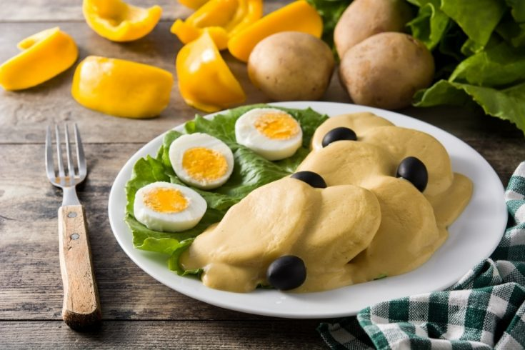

PAPAS A LA HUANCAINA

INGREDIENTS
- 4-5 yellow potatoes, boiled and peeled
- 1/2 cup of vegetable oil
- 1 onion, chopped
- 2-3 cloves of garlic, minced
- 1-2 hot peppers (aji amarillo or jalapeno), seeded and diced
- 1 cup of crumbled queso fresco or feta cheese
- 1/2 cup of evaporated milk
- Salt and pepper to taste
- Lettuce leaves
- Hard-boiled eggs, sliced
- Olives
INSTRUCTIONS
- In a blender or food processor, puree the onion, garlic, hot peppers, queso fresco, evaporated milk, salt, and
pepper until smooth. Set aside.
- Cut the boiled potatoes into thick slices and arrange them on a serving dish lined with lettuce leaves.
- Pour the sauce over the potatoes, making sure they are fully covered.
- Garnish with slices of hard-boiled eggs and olives.
- Chill in the refrigerator for at least 30 minutes before serving.
- Enjoy your delicious Papas a la Huancaína!